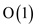

Dynamic open address hash table
The dynamic table is a table that continuously changes its size dynamically. Upon insertion of new values in the table, the size increases as it occupies a space or slot and upon deletion of values the table size decreases as it frees the slots. The change in size of table is limited to a certain value which is the load factor of the table.
A load factor in a nonempty table is the ratio of number of the elements in a dynamic table divided by size of the dynamic table. The hash table is a data structure used to store, insert, delete and check certain elements in it. Here, the hash table is used in the practical implementation of the dynamic table.
The implementation of dynamic table by open addressing hash table is simply done where the new element, which is about to be inserted, is first checked whether it is really in the hash table or not or there is any unused space left. An actual cost is the cost of every operation alone and the amortized cost is the average cost of the total operations taken altogether. And our main concern should be of how to make the amortized cost.
The hash tables must have a load factor strictly less than 1 or less than 100% as the load factor increases, so does the complexity and the hash table becomes slow. In this condition the search and various functions that are run through the hash tables, might even fail to run.The insertion action is taken along with the search function. This takes an average of times as it does a linear search. But they must have an amortized cost associated with it too. Using the amortized analysis, the amortized cost of insertion and deletion is only, even though the actual cost of an operation is larger, when it triggers an expansion or a contraction.
So, the actual cost is assumed to be; and this is the expected value per insertion.
The unused space in a dynamic table never exceeds a constant fraction of the total space.
The average cost per instruction is not, as the searching might check all the entries of the hash table to find the answer.
The number of elements after the  operation is
denoted by, and size
is denoted by; and the
potential for a particular state is denoted by. The
recurrence relation of the potential function goes like this
(consider the potential function (17.6) in the book):
operation is
denoted by, and size
is denoted by; and the
potential for a particular state is denoted by. The
recurrence relation of the potential function goes like this
(consider the potential function (17.6) in the book):
During deletion there are the following possibilities:
1. The table size remains the same, which means that the table does not have to contract.
2. The table has to contract to half its value (assumed to the opposite of the insertion function where the table has to expand its size to double).
In the 1st case, the load factor will be
greater than the half value of the table. Now we can see that after
deletion, the,
and.
will be
greater than the half value of the table. Now we can see that after
deletion, the,
and.Thus putting the condition in terms of the potential function according to the recurrence relation:
After the operation:
Before the operation:
Since in the above casesand the table remains in a constant state not changing (in this case not contracting).
The actual cost of the deletion process as no transfer is done from one table to another for changing.
Therefore the amortized cost of the deletion operation where is
Another case, is if it causes a contraction, that is , then the amortized cost will be:
In contraction, the size of the table becomes half its original size, and so:

If we neglect the variable term , then the amortized cost of table delete operation is 2, which is maximum in the above two cases, so the table delete operation is bounded by 2, that is a constant.
Dynamic tables are the tables that can expand and contrast according to the data to be stored in the table to save the space in memory. This expansion and contraction of table depends on the load factor.
There is a constant bound on the load factor of the table and the amortized cost is also bounded with some constant. The potential function of the table depends on the load factor and is defined as (consider equation (17.6) in the textbook):
Consider the potential functions as:
There are two cases to discuss first are when the element is deleted from the table and the load factor is and the table is not contracted. Second is when the load factorthen the table size is contracted by multiplying it by.The amortized cost in these two cases is as:
Case 1: Whenthen the amortized cost for the table using actual cost 1 as:
Case 2: If the load factor is the size of table is contracted as:
In this case the actual cost of the deletion operation is.So, the amortized cost is as:
… … (1)
From the formula of load factor:
Putting the value of in the equation (1) as:
In Case 1 the amortized cost of the deletion operation is 3 while in Case 2 it is 2 using the potential function.
Hence, the amortized cost of TABLE-DELETE operation is bounded by a constant 3 as in case 1.